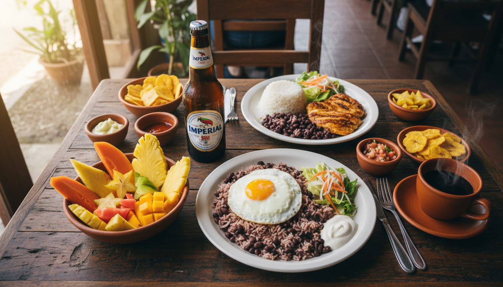

Guía de Comida y Bebidas Típicas Costarricenses

Para: Viajeros visitando San José y La Fortuna Contexto: Noviembre 2025 - Grupo de 10 adultos
Información Clave
La comida costarricense es sencilla, fresca y deliciosa. Basada en arroz, frijoles, plátanos y carnes/pescados frescos. Los costarricenses (ticos) comen comida casera tradicional en "sodas" (pequeños restaurantes familiares) que ofrecen los mejores precios y experiencia auténtica.
Puntos Clave:
- SODAS: Restaurantes familiares tradicionales - mejor relación calidad-precio ($5-8 por comida)
- COMIDA PRINCIPAL: Almuerzo (mediodía) es la comida más importante del día
- DESAYUNO TÍPICO: Gallo pinto (arroz con frijoles) con huevos, plátano, tortilla
- BEBIDA #1: Café costarricense - mundialmente famoso, excelente calidad
- CONDIMENTO ESENCIAL: Salsa Lizano - en cada mesa, dulce-picante
Horarios de Comida: - Desayuno: 7:00-9:00 AM (temprano es normal) - Almuerzo: 12:00-2:00 PM (comida principal, muchos regresan a casa) - Cena: 5:00-7:00 PM (más ligera que almuerzo)
Presupuesto Diario (3 comidas): - Sodas Budget: $15-25 pp - Mix Sodas + Restaurantes: $25-40 pp - Restaurantes: $40-60 pp
🍽️ Platos Típicos Imperdibles
Gallo Pinto

Qué es: El desayuno nacional de Costa Rica. Arroz mezclado con frijoles negros, salsa Lizano, culantro y cebolla.
Cuándo: Desayuno (servido con huevos, plátano maduro, tortilla, natilla)
Dónde encontrar: Todas las sodas, todos los desayunos de hotel
Precio: $5-8 desayuno completo con gallo pinto
Por qué probarlo: Es EL desayuno en Costa Rica. Si vas a Costa Rica y no pruebas gallo pinto, no fuiste a Costa Rica.
Casado

Qué es: El almuerzo tradicional costarricense. Plato completo con arroz, frijoles, ensalada, plátano maduro, picadillo y proteína (pollo, carne, pescado o cerdo).
Cuándo: Almuerzo y cena
Dónde encontrar: Todas las sodas, mayoría de restaurantes tradicionales
Precio: - Sodas: $6-10 - Restaurantes: $10-15
Por qué probarlo: Es la comida casera costarricense por excelencia. Balanceado, abundante, económico. Mejor en sodas locales.
Variaciones: Casado de pollo, carne, pescado, cerdo. El de pescado es popular en costa/La Fortuna.
Arroz con Pollo
Qué es: Pollo guisado con arroz amarillo (con achiote/azafrán) y vegetales. Plato de confort food.
Cuándo: Almuerzo o cena
Dónde encontrar: Todas las sodas, restaurantes, muy común
Precio: $4-7 (sodas), $8-12 (restaurantes)
Por qué probarlo: Es un clásico familiar costarricense. Sencillo, delicioso, abundante. Perfecto para los que no son aventureros con comida.
Ceviche

Qué es: Pescado fresco (corvina, dorado, tilapia) marinado en jugo de limón con cebolla, cilantro, pimientos, apio.
Cuándo: Aperitivo, almuerzo ligero, snack de bar
Dónde encontrar: - Marisquerías (pescaderías/restaurantes de mariscos) - Bares y restaurantes - Mercados de mariscos
Precio: $8-15 porción
Por qué probarlo: Fresco, refrescante, delicioso. Costa Rica tiene excelente pescado fresco. Popular en costas pero disponible en San José también.
Tip: Mejor en restaurantes especializados en mariscos (Pescatore San José) o en costa.
Chifrijo

Qué es: Plato inventado en San José. Base de arroz y frijoles rojos, cubierto con chicharrón (cerdo frito crujiente) y pico de gallo. Servido en bowl.
Cuándo: Aperitivo de bar, snack tarde/noche, comida informal
Dónde encontrar: - Bares en San José (muy popular en Barrio Escalante) - Algunos restaurantes casuales - Originado en Bar y Restaurante La Casa del Chifrijo (Miguel de la Guardia)
Precio: $6-10
Por qué probarlo: Es una invención tica moderna, muy popular entre locales. Perfecto para compartir con cervezas. Experiencia de bar costarricense.
Olla de Carne
Qué es: Sopa/estofado de carne de res con yuca, chayote, plátano verde, zanahoria, papa, elote (maíz). Abundante y reconfortante.
Cuándo: Almuerzo, especialmente fines de semana (comida familiar)
Dónde encontrar: Sodas tradicionales, restaurantes de comida típica
Precio: $8-12
Por qué probarlo: Plato de confort food costarricense. Casero, tradicional. Perfecto para días lluviosos (común en noviembre).
Nota: Porciones enormes, muy llenador.
Tamales
Qué es: Masa de maíz rellena con cerdo, arroz, garbanzos, vegetales, envuelta en hoja de plátano y hervida.
Cuándo: Tradicional en Navidad (diciembre), pero disponible todo el año
Dónde encontrar: - Mercados - Vendedores callejeros - Algunos restaurantes - Familias hacen en casa (más difícil encontrar en restaurantes)
Precio: $3-5 cada uno
Por qué probarlo: Tradición navideña costarricense. Sabor único, experiencia cultural. Noviembre está cerca de temporada de tamales.
Nota: Si viajan en noviembre final, pueden empezar a encontrar vendedores preparándose para temporada.
Empanadas
Qué es: Pasteles fritos o horneados rellenos de carne molida, pollo, frijoles con queso, o chiverre (calabaza dulce).
Cuándo: Snack, desayuno rápido, merienda
Dónde encontrar: - Panaderías - Sodas - Vendedores callejeros - Mercados
Precio: $1.50-3 cada una
Por qué probarlo: Snack perfecto, económico, delicioso. Bueno para llevar durante actividades.
Variaciones: - Saladas: carne, pollo, frijoles con queso - Dulces: chiverre (como pay de calabaza)
Patacones
Qué es: Plátanos verdes cortados, fritos, aplastados y fritos nuevamente hasta quedar crujientes. Servidos con sal.
Cuándo: Aperitivo, acompañamiento, snack
Dónde encontrar: Bares, restaurantes, sodas
Precio: $3-5 porción
Por qué probarlo: Crujientes, salados, adictivos. Equivalente caribeño de papas fritas. Perfecto con ceviche o como aperitivo.
Servido con: Frijoles molidos, guacamole, o solo con sal.
Plátanos Maduros
Qué es: Plátanos maduros (amarillos/negros) rebanados y fritos. Dulces, suaves, caramelizados.
Cuándo: Acompañamiento en casados, desayunos, cenas
Dónde encontrar: Casi todos los restaurantes y sodas
Precio: Incluido en casados ($6-10)
Por qué probarlo: Contraste dulce perfecto con arroz y frijoles salados. Básico de la comida tica.
Picadillo
Qué es: Hash de vegetales finamente picados (chayote, papa, vainicas, arracache) salteados con carne molida o solo vegetales.
Cuándo: Acompañamiento en casados, relleno de empanadas/tacos
Dónde encontrar: Sodas (parte del casado)
Precio: Incluido en casados
Por qué probarlo: Tradicional costarricense, casero. Cada soda tiene su versión especial.
🍹 Bebidas Tradicionales
Sin Alcohol
☕ Café Costarricense

Qué es: Costa Rica produce café de altísima calidad, reconocido mundialmente. Café arábica cultivado en volcanes.
Dónde encontrar: - Cafés especializados (Red Frog La Fortuna, Cafeoteca San José) - Sodas (café básico pero bueno) - Todos los desayunos
Precio: $1-3
Marcas famosas: Café Britt, Café Rey, 1820, Dota
Por qué probarlo: Es de lo mejor del mundo. Ticos toman café todo el día. Segunda bebida más consumida después del agua.
Tip: Visitar Red Frog Coffee Roasters en La Fortuna (tuestan in-house) o comprar bolsas para llevar.
Batidos Naturales
Qué es: Smoothies de fruta fresca mezclada con leche, hielo y azúcar.
Sabores comunes: - Papaya - Mango - Fresa (strawberry) - Banana - Mora (blackberry) - Cas (citrus parecido a limón)
Dónde encontrar: Sodas, cafés, restaurantes, juguerías
Precio: $2-4
Por qué probarlo: Frutas tropicales frescas, cremosos, refrescantes. Perfecto para clima caliente/húmedo.
Frescos Naturales
Qué es: Jugos de fruta fresca mezclados con agua (no leche) y azúcar/hielo.
Sabores comunes: - Piña (pineapple) - Sandía (watermelon) - Tamarindo - Cas - Maracuyá (passion fruit) - Guanábana (soursop)
Dónde encontrar: Todas las sodas, restaurantes
Precio: $2-3
Por qué probarlo: Más ligero que batidos, muy refrescante. Frutas exóticas tropicales.
Diferencia con batidos: Frescos = con agua | Batidos = con leche
Horchata
Qué es: Bebida dulce y espesa hecha con arroz, canela, leche, vainilla y azúcar.
Dónde encontrar: Sodas, restaurantes tradicionales
Precio: $2-3
Por qué probarlo: Tradicional, dulce, cremosa. Diferente a horchata mexicana. Experiencia local.
Agua Dulce
Qué es: Agua caliente con tapa de dulce (bloque de azúcar de caña sin refinar). Bebida tradicional campesina.
Dónde encontrar: Sodas rurales, casas ticas tradicionales, algunos restaurantes
Precio: $1-2
Por qué probarlo: Segunda bebida más popular en Costa Rica después del café. Muy tradicional, especialmente en zonas rurales.
Cuándo: Desayuno o merienda (snack afternoon)
Chan
Qué es: Bebida con semillas de chan (parecidas a chía) en jugo de fruta. Semillas se hinchan y crean textura gelatinosa.
Dónde encontrar: Sodas, mercados, puestos callejeros
Precio: $2-3
Por qué probarlo: Refrescante, saludable, textura única. Tradicional tico. Puede ser extraño al principio (textura gomosa).
Con Alcohol
🍺 Imperial
Qué es: La cerveza #1 de Costa Rica. Lager dorada, 4.6% ABV. Símbolo de la cultura tica.
Dónde encontrar: Todos los bares, restaurantes, supermercados
Precio: - Bares/restaurantes: $2-4 - Supermercados: $1.25-1.75
Por qué probarlo: Es LA cerveza de Costa Rica. Parte esencial de la experiencia tica. En todas partes.
Presentaciones: Botella 355ml, lata, botella 1L "mega", barril (Lite también disponible)
Pilsen
Qué es: Segunda cerveza más popular. Estilo Czech pilsner, 5.1% ABV. Más fuerte que Imperial.
Dónde encontrar: Bares, restaurantes, supermercados
Precio: Similar a Imperial ($2-4 bares)
Por qué probarlo: Alternativa a Imperial, sabor más robusto.
Bavaria
Qué es: Tercera cerveza popular. Tres variedades: Regular, Gold (rubia), Dark (oscura).
Dónde encontrar: Supermercados, algunos bares
Precio: $1.50-2 supermercados
Por qué probarlo: Bavaria Dark es excelente cerveza oscura.
Guaro (Cacique)
Qué es: Licor nacional de Costa Rica. Destilado de caña de azúcar, 30% ABV. Similar a vodka pero más suave.
Dónde encontrar: Bares, supermercados
Precio: ~$8-10 botella (supermercado)
Cómo se toma: - Guaro Sour: Guaro + jugo de limón + soda + azúcar (cóctel popular) - Shots: Puro, muy común - Chiliguaro: Guaro + salsa tomate + picante
Por qué probarlo: Bebida nacional, muy social. "Guaro sour" es el cóctel tico por excelencia.
Advertencia: Es fuerte. Ticos lo toman en shots seguidos de "buches" (sorbos de fresco).
Chiliguaro
Qué es: Shot picante: guaro + jugo de tomate + salsa picante + limón. Popular en bares.
Dónde encontrar: Bares en San José, especialmente zonas de fiesta
Precio: $3-5 shot
Por qué probarlo: Experiencia de bar tico. Picante, salado, fuerte. Muy popular entre locales jóvenes.
🥄 Condimentos y Extras Típicos
Salsa Lizano
Qué es: EL condimento de Costa Rica. Salsa vegetal dulce-picante-ácida. En cada mesa.
Sabor: Como A1 pero más dulce, con vegetales, ligeramente picante
Uso: Se pone en gallo pinto, casados, arroz, frijoles, carnes, huevos, TODO
Dónde comprar: Supermercados (llevar botella a casa como souvenir)
Por qué probarlo: No puedes entender comida tica sin probar Salsa Lizano. Es omnipresente.
Natilla
Qué es: Crema agria tica, similar a sour cream pero más líquida y ácida.
Uso: Acompaña casados, gallo pinto, sopas, tamales
Dónde: Incluida en casi todos los platos
Tortillas
Qué es: Tortillas de maíz gruesas, más grandes y suaves que tortillas mexicanas.
Uso: Acompañamiento en desayunos, para hacer "gallos" (tacos ticos)
Dónde: En todos los desayunos, mercados
🌱 Opciones Vegetarianas y Veganas
Costa Rica es relativamente fácil para vegetarianos/veganos:
Platos Naturalmente Vegetarianos:
- Gallo pinto (sin cerdo)
- Casado vegetariano (disponible en mayoría de sodas)
- Arroz con vegetales
- Plátanos maduros
- Patacones
- Empanadas de queso o chiverre (dulce)
Cómo Ordenar:
- "Sin carne, por favor" = Without meat
- "Soy vegetariano/a" = I'm vegetarian
- "Casado vegetariano" = Vegetarian casado (arroz, frijoles, ensalada, plátano, picadillo de vegetales)
Restaurantes Vegetarianos:
- Soda Tapia (San José) - Opciones vegetarianas
- Mercados tienen opciones de frutas/vegetales frescos
- Barrio Escalante (San José) tiene restaurantes vegetarian-friendly
📍 Dónde Encontrar Comida Típica
San José
Sodas Recomendadas: - Soda Tala (Mercado Central) - Muy auténtica, económica - Soda Tapia - Tradicional, vegetarian-friendly - Nuestra Tierra - Ambiente típico, turística pero buena
Para Café: - Cafeoteca (Barrio Escalante) - Café del Barista
Ver Guía Completa de Restaurantes San José
La Fortuna
Sodas Recomendadas: - Soda Viquez - Mejor casados, parking propio - Soda La Parada - 24 horas, muy local - Soda La Hormiga - Más barata, auténtica - Restaurante Tiquicia - Casados excelentes
Para Café: - Red Frog Coffee Roasters - Café tostado in-house, mejor de La Fortuna
Ver Guía Completa de Restaurantes La Fortuna
💰 Presupuesto por Tipo de Comida
Desayuno
- Sodas: $5-8 (gallo pinto completo)
- Cafés: $8-12 (desayuno americano + café premium)
- Hoteles: $10-15 (buffet)
Almuerzo (comida principal)
- Sodas: $6-10 (casado)
- Restaurantes casuales: $10-15
- Restaurantes mid-range: $15-25
Cena
- Sodas: $6-10
- Restaurantes casuales: $12-20
- Fine dining: $40-70
Bebidas
- Café: $1-3
- Frescos/Batidos: $2-4
- Cerveza (bar): $2-4
- Cerveza (supermercado): $1.25-1.75
- Guaro sour: $4-6
💡 Consejos Prácticos
Must-Try Absolutos (Primera Visita):
- Gallo pinto en desayuno (en cualquier soda)
- Casado en almuerzo (Soda Viquez La Fortuna o Soda Tala San José)
- Café costarricense (Red Frog La Fortuna)
- Imperial bien fría con comida
- Salsa Lizano en todo
Tips:
- Almuerzo es más barato: Especiales de almuerzo en restaurantes ($8-12)
- Sodas >> Restaurantes turísticos: Comida más auténtica, mejor precio
- Porciones son grandes: Considerar compartir
- Propinas: 10% incluido en cuenta, 15-20% total recomendado
- Desayuno tico es llenador: Gallo pinto puede sustentarte hasta almuerzo
- Pedir "con todo": Te traerán el casado completo con todos los acompañamientos
Seguridad Alimentaria:
- Agua de grifo es segura en San José y La Fortuna
- Hielo es seguro
- Comida callejera generalmente segura (usar sentido común)
- Frutas/ensaladas frescas son seguras
Vocabulario Útil:
- "Un casado, por favor" = A casado plate, please
- "Sin picante" = Not spicy (comida tica NO es picante generalmente)
- "La cuenta, por favor" = The check, please
- "Pura vida" = Expresión tica omnipresente (good, great, you're welcome, cool)
🎯 Recomendación Final para el Grupo
Plan sugerido para maximizar experiencia gastronómica:
Días en La Fortuna (Días 2-3):
- Desayunos: Soda La Parada (rápido) o Red Frog Coffee (experiencia café)
- Almuerzos: Soda Viquez (mejor casado)
- Cenas: Mix entre Don Rufino (1 noche especial) + Mercadito Arenal (variedad)
Días en San José (Días 4-6):
- Desayunos: Hotel o Nuestra Tierra
- Almuerzos: Soda Tala (Mercado Central - experiencia cultural)
- Cenas: Mix restaurantes Barrio Escalante
Imperdibles del Viaje:
- Desayuno gallo pinto (Día 2 - Soda La Parada)
- Casado auténtico (Día 3 - Soda Viquez)
- Café Red Frog (Día 2 o 3)
- Chifrijo en bar San José (Día 4-6 noche)
- Imperial bien fría
¿Preguntas sobre algún plato o bebida? Toda la información de restaurantes específicos está en las guías de Restaurantes San José y Restaurantes La Fortuna.